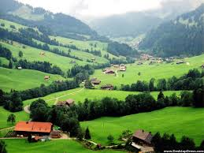

, "King of Bollywood" or "King Khan", he has appeared in over 80 Hindi films in genres including romance, action and comedy. His work in Bollywood has earned him numerous accolades, including fourteen Filmfare Awards from career in theatre and appeared in several television series in the late 1980s. He made his Bollywood debut in 1992 with Deewana. Early in his career, Khan was recognised for his unconventional choice of portraying negative roles in the films Darr (1993), Baazigar (1993), and Anjaam (1994). He then rose to prominence by playing a series of roles in romantic dramas, including Dilwale Dulhania Le Jayenge (1995), Dil To Pagal Hai (1997), Kuch Kuch Hota Hai (1998), and Kabhi Khushi Kabhie Gham (2001). Khan later earned critical acclaim for his portrayal of an alcoholic man in Devdas (2002), a NASA scientist in Swades (2004), a hockey coach in Chak De! India (2007), and an autistic man in My Name Is Khan (2010). Thirteen of the films he has acted in have accumulated gross earnings of over INR1 billion (US$16 million) worldwide,[5] making him one of the most successful leading actors of Hindi cinema.[6][7]